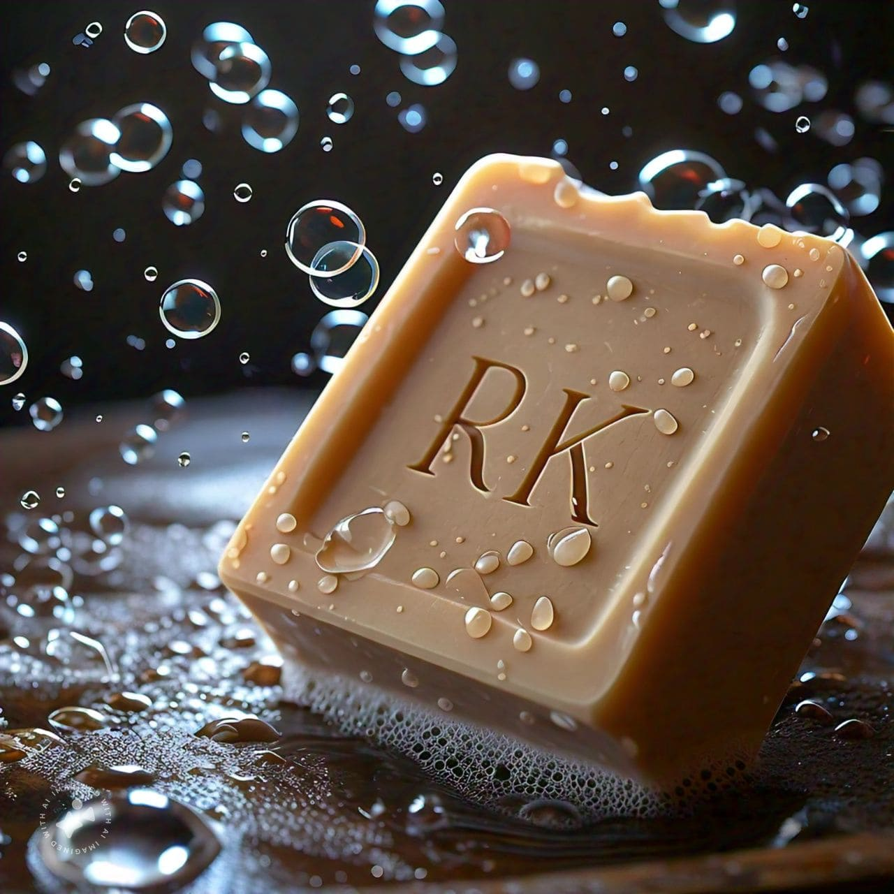
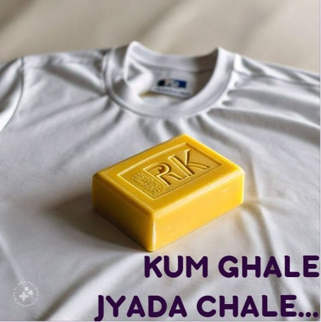
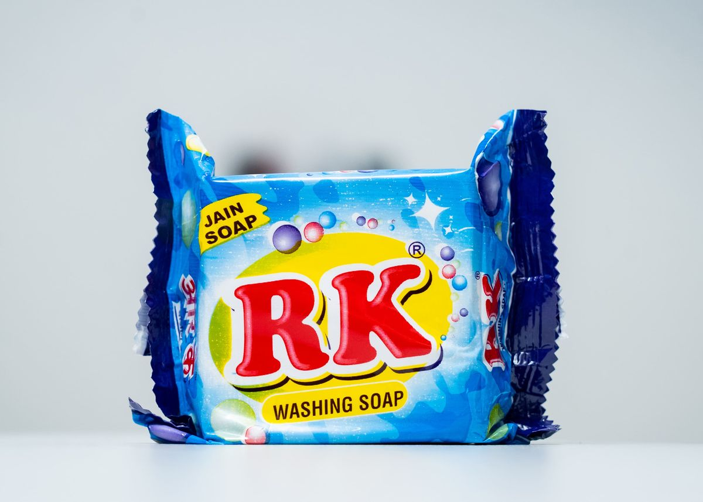

Four decades of practice
Soap has been made under this name since 1978 — the same recipes, refined batch after batch.
Stain Never Sustain
Four decades of Jain soap made from plant-based oils, never animal fat. We supply distributors, wholesalers and retailers across Maharashtra in carton sizes from 2 to 60 pieces.



To be a trusted leader in the soap industry, where quality and service sit behind every decision we make. We craft superior products that enrich everyday life while delivering unmatched customer satisfaction — so that excellence and integrity define our brand.
“Kum ghale, jyada chale.” Use less — it lasts longerWhat sets us apart
Six things our distributors and retailers can count on, batch after batch.
Soap has been made under this name since 1978 — the same recipes, refined batch after batch.
Ethical production using plant-based oils, with no animal fat derivatives anywhere in the process.
Rigorous quality control on every batch, so what leaves the works is exactly what you expect.
Timely delivery and reliable service — dispatch schedules our buyers can actually plan around.
Bars, powders, dishwash gels and fabric cleaners — the whole cleaning aisle from a single works.
Carton counts from 2 to 60 pieces, sized for retail shelves and for wholesale movement alike.
Four steps, unchanged in principle since the works opened.
Every batch starts with plant-based oils. No animal-fat derivatives ever enter the kettle.
Mixed, cured and cut at our own works in Ulhasnagar rather than bought in and relabelled.
Each batch is checked against our standard before it is allowed anywhere near a carton.
Cartoned to the box counts you ordered, then sent out on the schedule we committed to.
Thirteen SKUs across four categories. Filter the range, then tap any product for a closer look or to send an enquiry.

Jain washing soap bar (RK sabun) for everyday kapda washing — made from plant-based oils with no animal fat.

Jain washing soap bar (RK sabun) for everyday kapda washing — made from plant-based oils with no animal fat.

Jain washing soap bar (RK sabun) for everyday kapda washing — made from plant-based oils with no animal fat.

Jain washing soap bar (RK sabun) for everyday kapda washing — made from plant-based oils with no animal fat.

Concentrated bartan dhone ka liquid that removes food smell, cuts tough grease and leaves utensils sparkling clean.

Concentrated bartan dhone ka liquid that removes food smell, cuts tough grease and leaves utensils sparkling clean.

Concentrated bartan dhone ka liquid that removes food smell, cuts tough grease and leaves utensils sparkling clean.

Concentrated bartan dhone ka liquid that removes food smell, cuts tough grease and leaves utensils sparkling clean.

5X action formula liquid detergent for machine and bucket wash, safe on everyday coloured fabric.

5X action formula liquid detergent for machine and bucket wash, safe on everyday coloured fabric.

5X action formula liquid detergent for machine and bucket wash, safe on everyday coloured fabric.

Multipurpose cleaning gel for floors, tiles and general household cleaning in bulk catering sizes.

Multipurpose cleaning gel for floors, tiles and general household cleaning in bulk catering sizes.
No products in this category yet.
Common questions from distributors, retailers and customers about RK soap and our supply terms.
We manufacture RK washing soap bars (sabun), concentrated dishwash gel, detergent powder and liquid fabric cleaner. The range runs to 13 products across four categories, in pack sizes from 90 g bars up to 5 litre cans.
RK washing soap is a Jain soap. It is made from plant-based oils only, with no animal fat derivatives used at any stage of production.
Yes. We supply distributors, wholesalers and retailers in bulk, with carton counts from 2 pieces (5 litre cans) up to 60 pieces (90 g bars). Call 0251-2708650 or request a callback for a price list.
For kapde (clothes), use RK Washing Soap for hand washing or RK Fabric Cleaner for machine and bucket wash. For bartan (utensils), use RK Dishwash Gel — it removes food smell and cuts through tough grease.
RK Dishwash Gel is available in 250 ml, 500 ml and 1 litre bottles, and in 5 litre cans for catering and bulk use.
Our works are at Gajanand Compound, Dhobi Ghat Road, opposite Sai Baba Mandir, Ulhasnagar 421001, Dist. Thane, Maharashtra.
Mamta Soap Works has been manufacturing soap in Ulhasnagar since 1978 — more than four decades of continuous production.
Call the works directly, or leave your number and we will call you back.
Leave your details and we will get back to you about pricing, box counts and delivery.